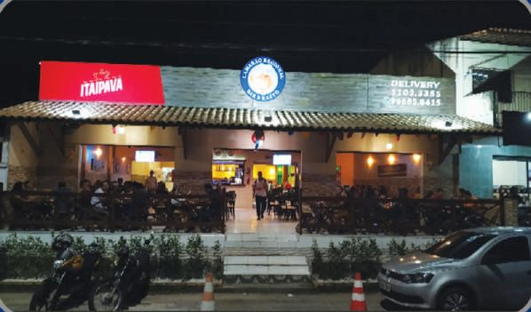
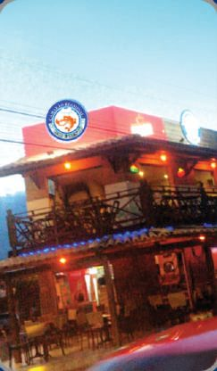
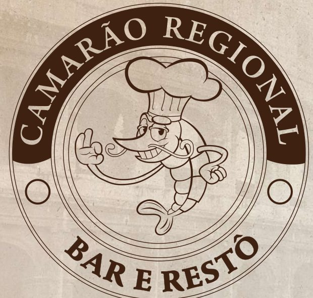

Camarão Regional — Everest
Av. Independência, 841 — Quintino Cunha, Fortaleza/CE
Nossa primeira casa, desde 28/08/2013
Duas casas de sabor, tradição e ambiente em família — e a Il Migliore, nossa casa italiana para você se surpreender. Peça no delivery ou venha nos visitar.


2013FundaçãoFundado em 28 de agosto de 2013, no bairro Quintino Cunha, o Camarão Regional nasceu do sonho de um casal empreendedor: levar aos clientes e amigos a melhor experiência em sabor e qualidade da gastronomia local.
Especializados em frutos do mar, com conhecimento amplo em crustáceos, peixes, aves e carnes, também preparamos os melhores petiscos da região — sempre com equipe treinada, atendimento de qualidade e espaço kids para toda a família.
“Todos os nossos sonhos podem se tornar realidade se tivermos a coragem para persegui-los.” — Walt Disney, inspiração dos fundadores
O clássico que conquistou Fortaleza. Crustáceos, peixes, aves e as melhores carnes, servidos em duas casas na Av. Independência, no Quintino Cunha.
Seg. a Sex.: 17h às 00h
Sáb. e Dom.: 11h às 00h
Almoço especial de fim de semana
Av. Independência, 841 — Quintino Cunha, Fortaleza/CE
Nossa primeira casa, desde 28/08/2013
Av. Independência, 800 — Quintino Cunha, Fortaleza/CE
Nossa segunda casa, desde 18/05/2018

A casa italiana do Camarão Regional. Massas frescas, risotos, pizzas artesanais e um festival do mar para você se surpreender — em um ambiente pensado nos mínimos detalhes.
R. João Tinoco, 1 — Jardim Guanabara, Fortaleza/CE, 60351-090
Massas, risotos e pizzas em um ambiente pensado nos mínimos detalhes. Confira fotos e horários atualizados no Instagram da casa.
Estamos na Av. Independência, no bairro Quintino Cunha, em Fortaleza/CE.
Peça agora pelo delivery ou fale com a gente pelo WhatsApp.